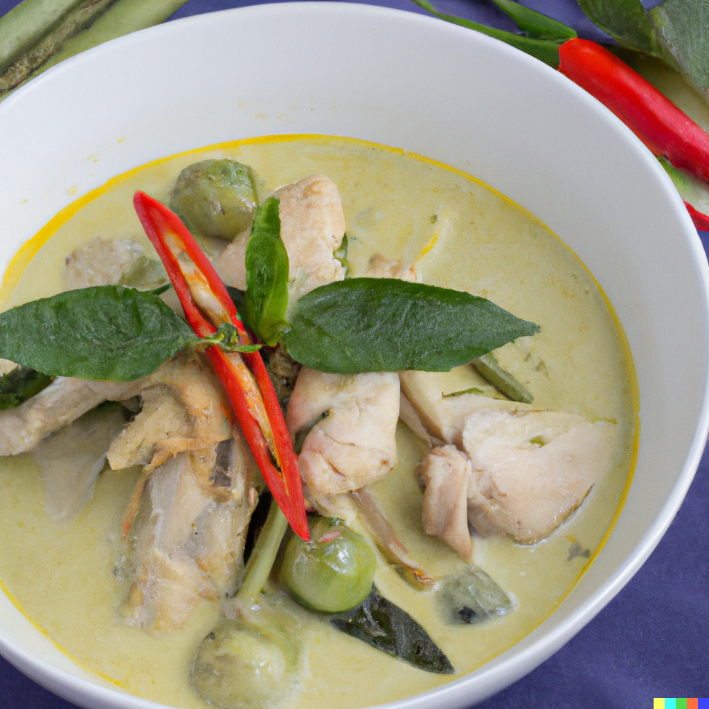

Thai Green Curry with Chicken

Aromatic and spicy curry from Thailand
Ingredients
- Chicken breast (500 g, cubed)
- Thai green curry paste (2-3 tbsp)
- Coconut milk (1 can, 400 ml)
- Chicken stock (250 ml)
- Eggplant (1 large, cubed)
- Bamboo shoots (1 can, 400 g)
- Kaffir lime leaves (4-5)
- Basil leaves (a handful)
- Fish sauce (1 tbsp)
- Brown sugar (1 tbsp)
- Lime juice (1 tbsp)
Steps
- Heat a large pot or wok over medium heat. Add the curry paste and stir for 1-2 minutes until fragrant.
- Add the cubed chicken and stir until it is coated with the curry paste.
- Pour in the coconut milk and chicken stock. Add the eggplant, bamboo shoots, kaffir lime leaves, fish sauce, and brown sugar. Stir to combine.
- Bring the curry to a boil, then reduce the heat and let it simmer for 15-20 minutes, or until the chicken is cooked through and the vegetables are tender.
- Stir in the lime juice and basil leaves just before serving. Serve hot with steamed rice.